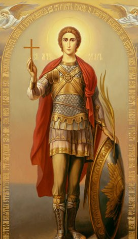
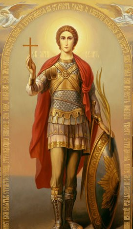
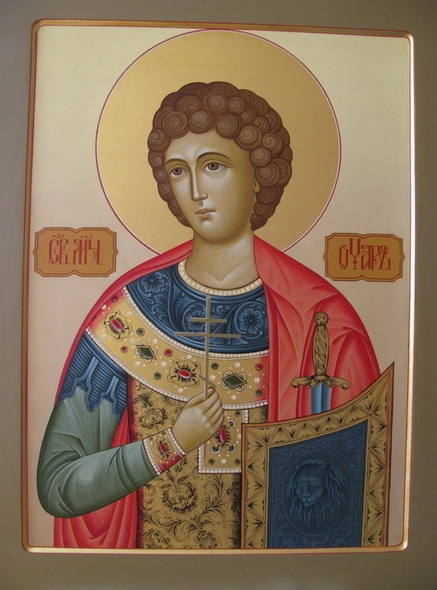

1 11 2011 (2020 дней 20 часов назад)
День Святого мученика Уара


(День памяти 19 октября /1 ноября по нов. ст.)
Святой мученик Уар – единственный христианский святой, являющийся небесным ходатаем за некрещеных умерших и младенцах, умерших во чреве матери или при родах. В дореволюционной России не было ни одного храма в честь святого Уара, и это неслучайно: весь народ, за исключением иноверцев, был крещен в Православной вере, поэтому и не было потребности прибегать к заступничеству святого мученика. В наше время необходимость молитвенного обращения верующих к этому святому чрезвычайно остра: ведь за семьдесят с лишним лет богоборческой власти в нашей стране миллионы людей были насильно отлучены от Церкви; они жили, трудились, воевали, и покидали этот мир, так и не приняв Святого Крещения. Да и в наши дни далеко не все, связывающие себя с традициями и культурой нашего народа спешат принимать таинство Крещения. За некрещеных Церковь в обычном порядке не молится, их имена не разрешается поминать на Божественной литургии и заупокойных службах, – однако за них можно просить, молитвенно обращаясь к святому мученику Уару.

Абхазия.мироточащая икона св.мч.Уара
Житие святого мученика Уара
Святой мученик Уар (†307) жил в царствование нечестивого римского императора Максимиана в городе Александрии в Египте и был военачальником Тианской когорты. Веруя в Истинного Бога, но страшась беззаконных идолопоклонников, он до времени скрывал свою веру. Максимиан воздвиг гонения на христиан и послал во все подвластные ему страны указ о том, чтобы умерщвлять всех христиан, которые откажутся принести жертву богам. Дошло сие повеление и до стран Египетских, и здесь кровь христианская стала проливаться нещадно.
Во время начавшегося гонения святой Уар обходил по ночам темницы и ухаживал за заключенными в них христианами: омывал и обвязывал им раны, приносил пищу. Однажды святой Уар посетил ночью темницу, в которой находились семеро христианских учителей. Святой Уар просил их помолиться, чтобы он избавился от страха перед мучениями и сподобился пострадать за Христа. «Если ты боишься временной муки, то не избежишь и вечной, если страшишься исповедать Христа на земле, то не увидишь Его Лика и на Небе», — ответили они.
Услышав это, святой Уар почувствовал в себе такую любовь к Богу, что решился претерпеть страдания за Имя Его и остался в темнице. Утром один из мучеников скончался от ран. Святой Уар, представ вместе с шестью учителями перед наместником, сказал, что он хочет пострадать вместо скончавшегося узника. Святого Уара били палками, тело его строгали железными ножами, затем, прибив к дереву вниз головой, сдирали с его спины кожу, а чрево его терзали до тех пор, пока все внутренности не выпали на землю. Святые молились за него и воодушевляли на подвиг. Наместник приказал увести их обратно в темницу, а святой Уар возопил к ним: «Учители мои! Помолитесь за меня последний раз Христу, ибо я уже разлучаюсь с телом, вас же благодарю за то, что вы привели меня к Вечной Жизни». Через несколько часов святой Уар скончался. Мучители вытащили тело его из города и бросили на съедение псам.
Одна благочестивая вдова, блаженная Клеопатра, муж которой был также военачальником в Египте, со скорбью смотрела издалека на страдания святого Уара. Когда тело святого было брошено вне города, блаженная Клеопатра ночью тайно принесла его в свой дом и погребла в спальне. На следующее утро были усечены мечом христианские учители. Блаженная Клеопатра постоянно молилась над гробом святого Уара, почитая его великим заступником и ходатаем перед Богом.
Когда гонение утихло, Клеопатра вернулась в Палестину, в свое родное селение Эдра. Под видом останков своего мужа блаженная Клеопатра перенесла мощи святого мученика Уара и положила в древней гробнице своих предков. Каждый день ходила она к гробнице, возжигала свечи и воскуряла благовония, а по ее примеру и другие христиане стали прибегать к молитвам святого Уара и получали при гробе его исцеления.
Блаженная Клеопатра, видя, что множество христиан собирается ко гробу святого, решила построить в его честь храм. К тому времени сын ее Иоанн достиг семнадцатилетнего возраста. Блаженная Клеопатра испросила для него у царя почетную должность в войске и решила, что начнет он службу по окончании строительства храма. Когда церковь была создана, блаженная Клеопатра призвала епископов и пресвитеров, и честные мощи святого Уара были переложены на драгоценный одр, а сверху мощей Клеопатра положила пояс и воинскую одежду, которую должен был вскоре надеть ее сын. Она усердно молилась святому Уару, чтобы он был помощником ее сыну и испросил бы для него у Господа то, что будет Ему угодно, а сыну полезно.
По освящении храма, мощи святого Уара положили под престолом, на котором совершили Божественную литургию. После службы блаженная Клеопатра устроила угощение для гостей и вместе с сыном прислуживала им. Внезапно Иоанн заболел горячкой и в полночь скончался, оставив мать в безутешном горе. С плачем блаженная Клеопатра устремилась в храм и, припав к гробнице, стала укорять святого мученика: «Так-то отплатил ты мне, угодник Божий, за то, что столько потрудилась для тебя? Такую-то помощь ты оказал мне тогда, как я для тебя презрела своего мужа и возлагала на тебя всю свою надежду? Кто погребет мое тело? Лучше мне умереть самой, чем видеть мертвым моего сына. Отдай же мне его или же и меня тотчас возьми отсюда, ибо мне от горькой печали жизнь стала в тягость».
От крайней усталости и великой скорби блаженная Клеопатра заснула прямо у гроба. В сновидении ей явился святой Уар, который держал за руку ее сына. Оба они были светлы, как солнце, а одежды их были белее снега; на них были золотые пояса и прекрасные венцы на головах. Увидев их, блаженная Клеопатра бросилась к ногам святых, но мученик Уар поднял ее и сказал: «О женщина, что ты жалуешься на меня? Неужели ты думаешь, что я забыл те благодеяния, которые ты оказала мне? Разве я не внимаю всегда твоим молитвам и не молюсь за тебя Богу? И прежде всего я умолил Бога о сродниках твоих, с которыми ты положила меня в гробнице, чтобы им были отпущены грехи их. Потом я взял на служение Небесному Царю твоего сына. Не ты ли сама молила испросить у Бога для него то, что будет Ему угодно и полезно тебе и сыну твоему? Сын твой теперь предстоит Престолу Божию и служит Царю Небесному, но, если хочешь, чтобы он служил царю земному и временному, возьми его обратно». Но отрок, сидевший на руках у святого Уара, обнял его и сказал: «Нет, заступник мой! Не слушай матери моей, не лишай меня общения со святыми».
Обращаясь к блаженной Клеопатре, святой Иоанн сказал: «Что ты плачешь, мать моя? Я причислен к воинству Небесному и предстою Христу вместе с Ангелами». Блаженная Клеопатра сказала: «Возьмите же и меня с собой, чтобы мне быть с вами». Но святой Уар ответил: «И здесь, оставаясь на земле, ты все-таки с нами; иди же с миром, а потом, когда повелит Господь, придем взять тебя».
После этих слов оба они стали невидимы. Придя в себя, блаженная Клеопатра почувствовала несказанную радость и рассказала пресвитерам о видении; вместе с ними она с честью погребла своего сына при гробе святого Уара, уже не плача, а веселясь о Господе. После этого, раздав имение свое нуждавшимся, отрекшись от мира, Клеопатра стала жить при церкви святого Уара, проводя день и ночь в посте и молитвах. Каждое воскресенье во время молитвы являлся ей святой Уар с ее сыном. Проведя семь лет в таких подвигах и благоугодив Богу, блаженная Клеопатра преставилась в 327 году.
http://hramyara.ru/